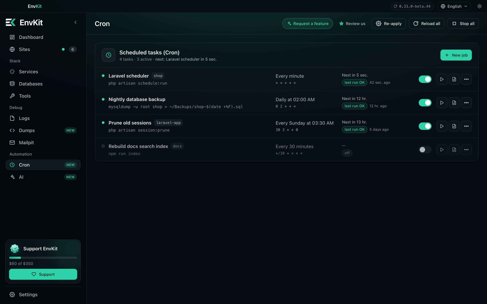
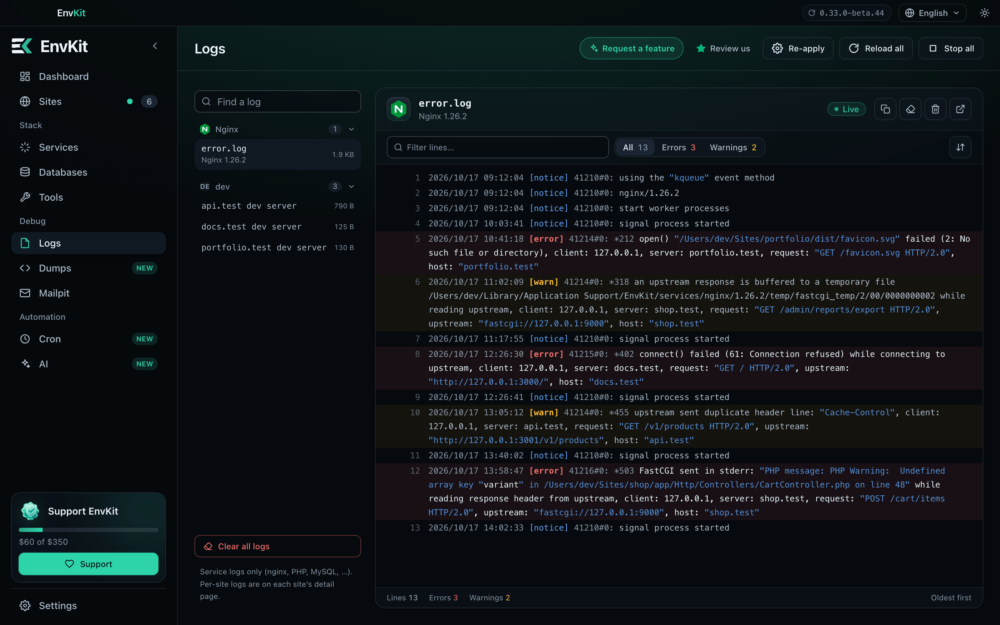
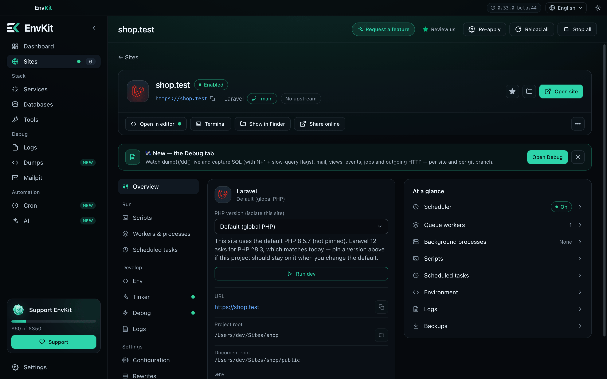
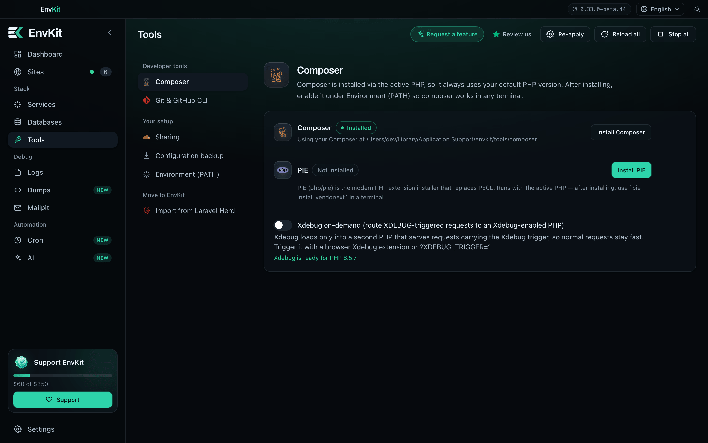

EnvKit
Your local stack,
one place.
nginxApachePHPMySQLPostgreSQLRedisNode.jshttps://*.test


Pick a starter. EnvKit does the rest.
https://

Your site is livetrusted HTTPS, no config files

Every project gets its own .test domain.
Laravel, WordPress, Next.js, Vite. Each on trusted HTTPS.

Every service, running.
Real status, real ports. Start, stop and switch versions in one click.

Databases, users and snapshots.
MySQL / MariaDB, PostgreSQL and MongoDB, side by side.

AI assistant·connected to EnvKit over MCP
Redis stopped and the shop queue is failing. Can you fix it?
envkit · diagnose_service { "name": "redis" }
stopped · port 6379 is free · config OK
envkit · start_service { "name": "redis" }
running · 127.0.0.1:6379
envkit · restart_site_queue_worker { "name": "shop" }
worker default restarted
Redis is back on
:6379 and the shop queue worker restarted. Jobs are processing again.Your AI assistant can run the stack toobuilt-in MCP server




Cron
Scheduled tasks, with their last run
Logs
Every service log, live and searchable
Site detail
PHP version, workers, scheduler, backups
Tools
Composer, PIE, Xdebug on demand
EnvKit
Your local stack, one place.
Free for Windows & macOS
Download at envkit.net